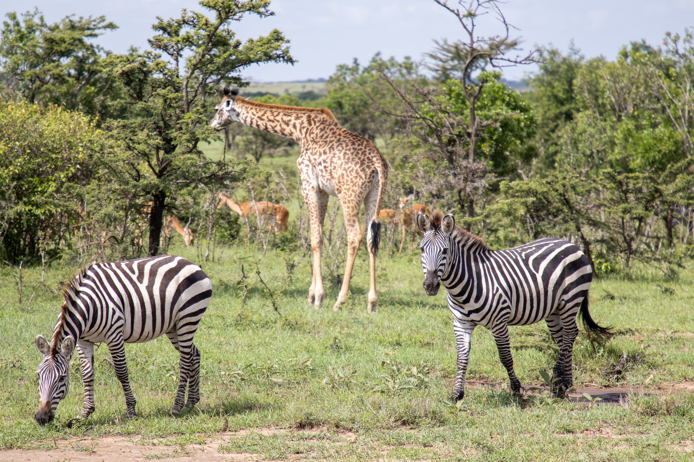
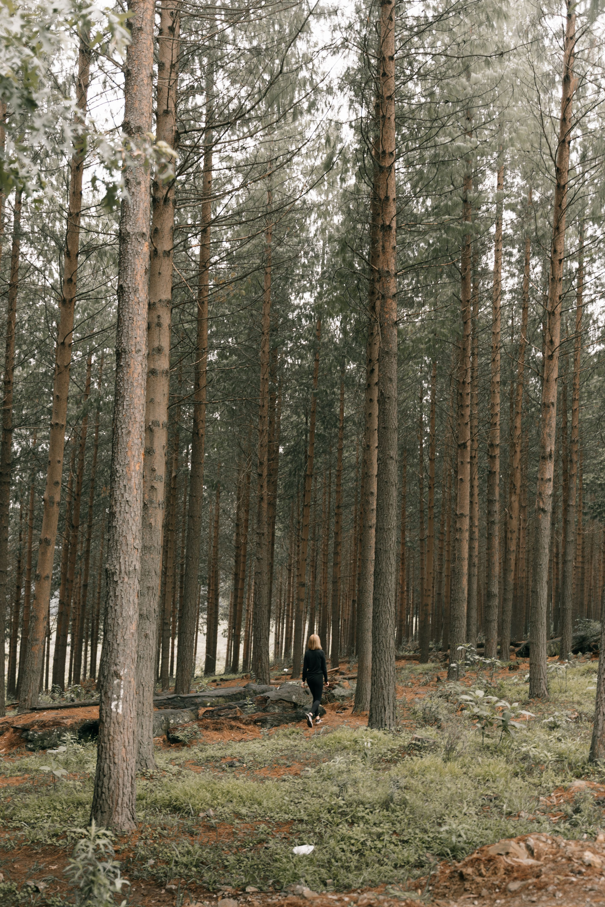
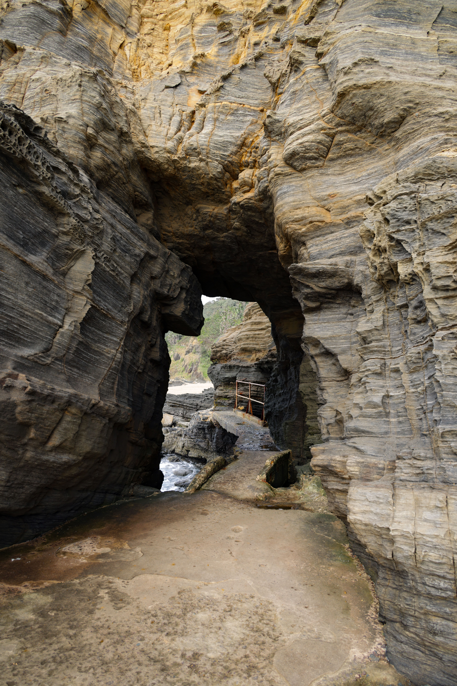
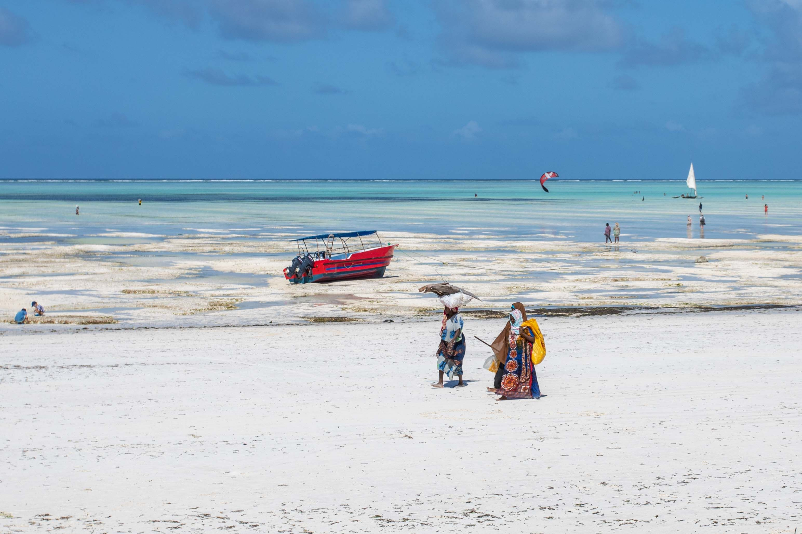

Nairobi National Park

Nairobi National Park is located just outside Kenya's capital and offers visitors the opportunity to see wildlife against a backdrop of the city skyline.
Best time to visit:
Discover Kenya's diverse destinations, wildlife and culture.

Nairobi National Park is located just outside Kenya's capital and offers visitors the opportunity to see wildlife against a backdrop of the city skyline.
Best time to visit:

Karura Forest is a peaceful urban forest offering walking trails, waterfalls, caves and opportunities to enjoy nature close to Nairobi.
Best time to visit:

Hell's Gate National Park is famous for its dramatic cliffs, gorges and waterfalls. Visitors can also enjoy activities such as cycling and hiking.
Best time to visit:
Lake Nakuru National Park is known for its beautiful lake, diverse wildlife and large populations of flamingos.
Best time to visit:

Mombasa is a historic coastal city known for its rich Swahili culture, beautiful beaches, historic sites and vibrant coastal atmosphere.
Best time to visit:

Diani Beach is a popular coastal destination famous for its white sandy beaches, clear waters and opportunities for water-based activities.
Best time to visit:
| Destination | Region | Best Season | Budget Per Day |
|---|---|---|---|
| Nairobi National Park | Nairobi | July–October | KSh 5,000–10,000 |
| Karura Forest | Nairobi | June–October | KSh 2,000–5,000 |
| Hell's Gate National Park | Nakuru | June–October | KSh 4,000–8,000 |
| Lake Nakuru National Park | Nakuru | June–October | KSh 5,000–12,000 |
| Mombasa | Coast | January–March | KSh 5,000–12,000 |
| Diani Beach | Coast | January–March | KSh 6,000–15,000 |